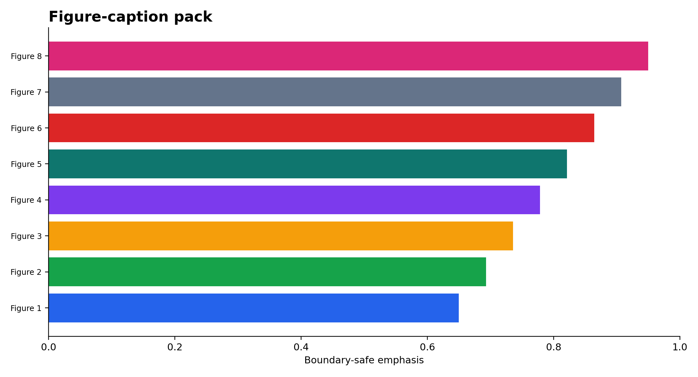
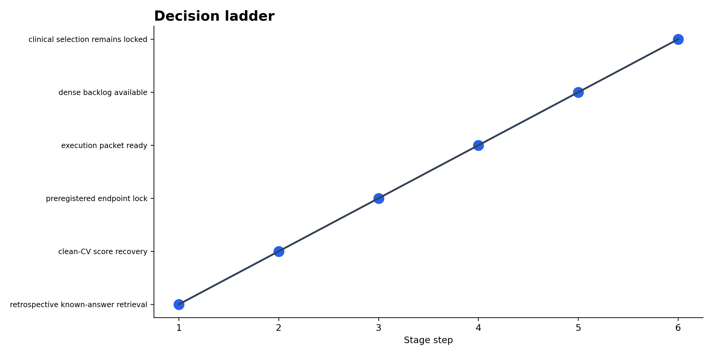
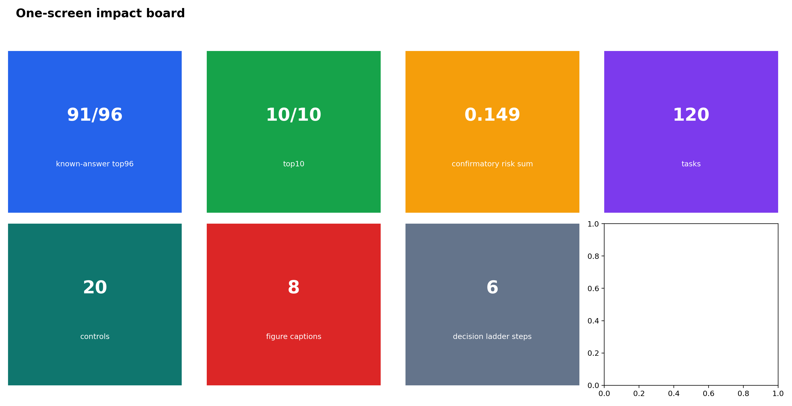
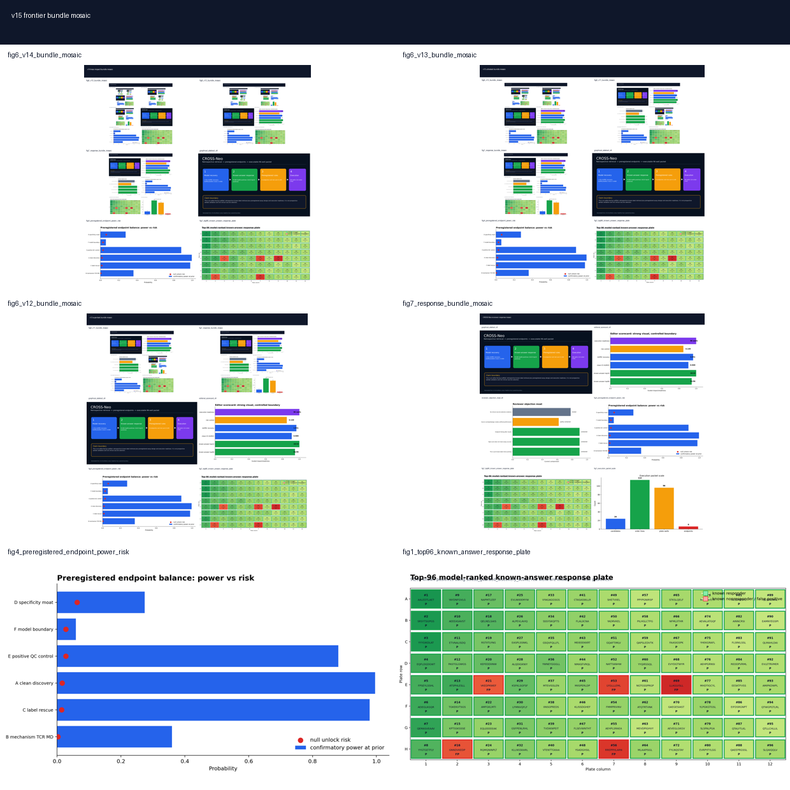

01Figures




02Figure captions
| figure | asset | headline_metric | safe_caption | boundary |
|---|---|---|---|---|
| Figure 1 | graphical_abstract_v9.png | 91/96 known-answer positives | retrospective retrieval, not prospective validation | retrospective / preregistered / execution-ready only |
| Figure 2 | editorial_scorecard_v9.png | 1.93x score recovery | clean-CV benchmark recovery | retrospective / preregistered / execution-ready only |
| Figure 3 | reviewer_objection_moat_v9.png | 91/96 board and explicit objections | reviewer defense surface | retrospective / preregistered / execution-ready only |
| Figure 4 | fig4_preregistered_endpoint_power_risk.png | 0.149 confirmatory risk sum | pre-assay endpoint lock | retrospective / preregistered / execution-ready only |
| Figure 5 | fig1_v13_task_tracks.png | 90 ultratasks | dense backlog | retrospective / preregistered / execution-ready only |
| Figure 6 | fig1_v14_task_tracks.png | 120 max-impact tasks | max-density board | retrospective / preregistered / execution-ready only |
| Figure 7 | fig6_v14_bundle_mosaic.png | one-screen mosaic | compressed pitch view | retrospective / preregistered / execution-ready only |
| Figure 8 | fig4_priority_task_lanes.png | priority lanes | granular execution map | retrospective / preregistered / execution-ready only |
03Decision ladder
| step | stage | headline | allowed_use | boundary |
|---|---|---|---|---|
| 1 | retrospective known-answer retrieval | 91/96 | demo / prioritization | retrospective labels only |
| 2 | clean-CV score recovery | 1.93x | benchmark recovery | not wetlab proof |
| 3 | preregistered endpoint lock | 0.149 | assay statistics | no post-hoc tuning |
| 4 | execution packet ready | 96 wells | lab handoff | not a completed assay |
| 5 | dense backlog available | 120 tasks | project management | scaffold only |
| 6 | clinical selection remains locked | locked | future work only | not a claim |
04One-screen board
| tile | value | label | meaning |
|---|---|---|---|
| top96 | 91/96 | known-answer top96 | retrospective board |
| top10 | 10/10 | top10 | clean ranking |
| risk | 0.149 | confirmatory risk sum | pre-assay lock |
| tasks | 120 | tasks | dense backlog |
| controls | 20 | controls | claim safety |
| captions | 8 | figure captions | editor surface |
| ladder | 6 | decision ladder steps | claim ladder |
05Reviewer summary
| reviewer_objection | response_anchor | status | action |
|---|---|---|---|
| This is just known-label cherry-picking. | objection moat slide | contained | answer in deck and task board |
| High score does not mean assay success. | one-page reviewer dashboard | contained | answer in deck and task board |
| Endpoint fishing after results. | frozen threshold pack | contained | answer in deck and task board |
| Source overlap/leakage creates artificial performance. | evidence-to-claim matrix | partly contained | answer in deck and task board |
| No clinical vaccine-selection evidence. | claim boundary table | locked | answer in deck and task board |
| Need one-page summary of the whole story. | summary cards | contained | use the one-screen board |
| Need figure captions that carry the boundary. | caption pack | contained | use safe captions only |
| Need a decision ladder from evidence to claim. | decision ladder | contained | keep claim ladder locked |
| Need clear next steps. | task board | contained | point to task backlog |
| Need a hard number that matters. | known-answer + risk | contained | 91/96 and 0.149 |
06Sources + paths
Output directory: /home/seungho/personal/THCA_data_analysis/project/results/cross_neo_kaggle_winner_playbook_2026_05_10/impact_frontier_v15_2026_05_11
HTML: /home/seungho/personal/THCA_data_analysis/project/papers_hub_2026_05_04/cross_neo_impact_frontier_v15.html
Live deploy status: ok